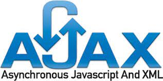

AJAX: Asynchronous JavaScript & XML
AJAX significa Asynchronous JavaScript And XML. En pocas palabras, es el uso del objeto
XMLHttpRequest para comunicarse con los servidores.
Puede enviar y recibir información en varios formatos, incluidos
JSON, XML, HTML y archivos de texto.
El atractivo de AJAX es
su naturaleza "asíncrona", lo que significa que puede comunicarse con el servidor, intercambiar datos y
actualizar la página sin tener que recargar el navegador.

Librerias Exteriores
Ajax no es una técnología en sí mismo. En realidad, se trata de varias tecnologías independientes que se unen:
- HTML, y CSS, para crear una presentación basada en estándares.
- DOM, para la interacción y manipulación dinámica de la presentación.
- HTML, XML y JSON, para el intercambio y la manipulación de información.
- XMLHttpRequest o Fetch, para intercambio asíncrono de información.
- JavaScript, para unir todas las demás tecnologías.
- Estado de la petición
- READY_STATE_UNINTIALIZED = 0
- READY_STATE_LOADING = 1
- READY_STATE_LOADED = 2
- READY_STATE_INTERACTIVE = 3
- READY_STATE_COMPLETE = 4
- Códigos de estado de respuesta HTTP
Objeto XMLHttpRequest
API Fetch
API Fetch + Async-Await
Axios
Axios + Async-Await